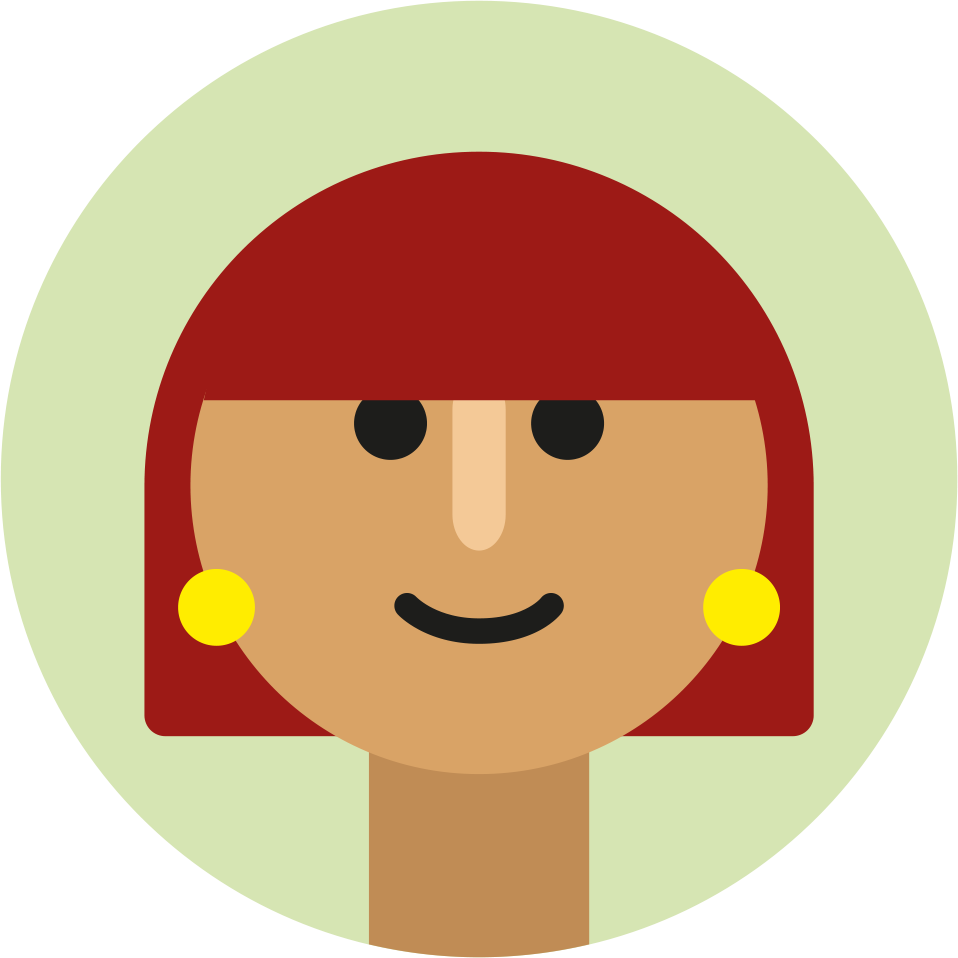
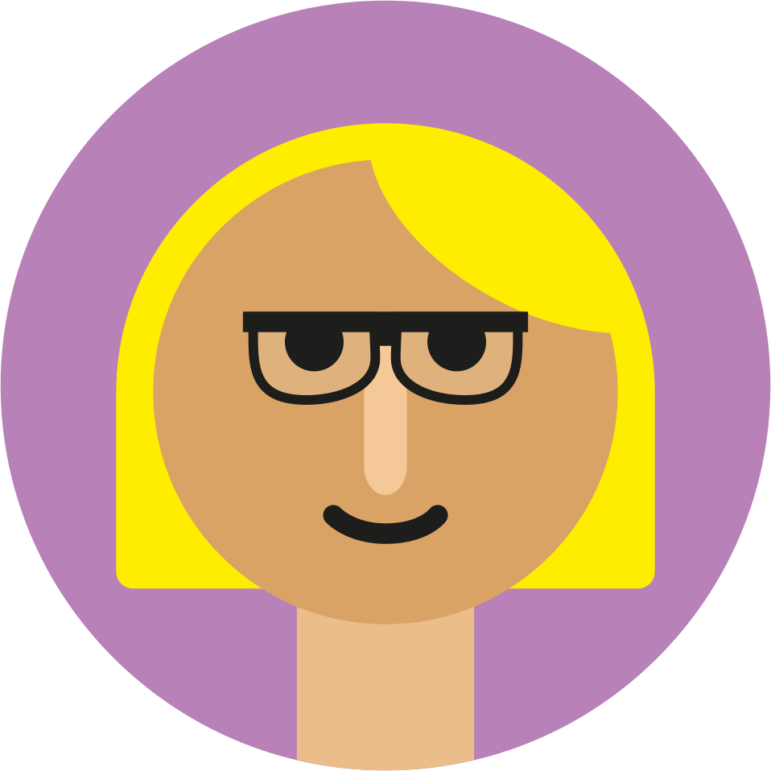
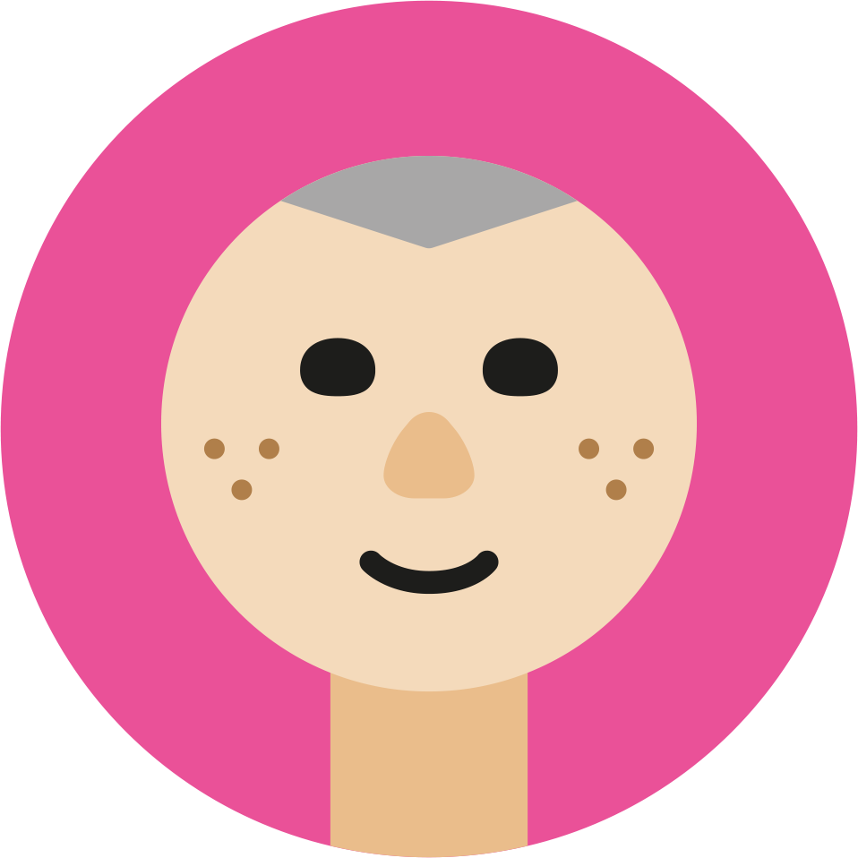

Ashleigh

A severely sight-impaired person with a screen reader.
Pawel

An autistic person who is easily distracted when browsing the web.
Simone

A dyslexic person who needs more time to understand text and forms.
Ron

An older person with multiple conditions and no assistive tech.
Claudia

A sight-impaired person who uses a screen magnifier.
Chris

A person with rheumatoid arthritis who mostly uses his keyboard.